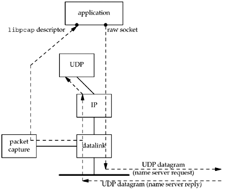
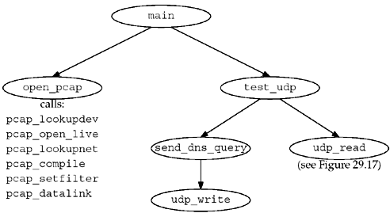
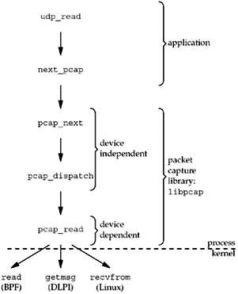

| [ Team LiB ] |
|
29.7 Examining the UDP Checksum FieldWe will now develop an example that sends a UDP datagram containing a DNS query to a name server and reads the reply using the packet capture library. The goal of the example is to determine whether the name server computes a UDP checksum or not. With IPv4, the computation of a UDP checksum is optional. Most current systems enable these checksums by default, but unfortunately, older systems, notably SunOS 4.1.x, disable these checksums by default. All systems today, and especially a system running a name server, should always run with UDP checksums enabled, as corrupted datagrams can corrupt the server's database.
We will build our own UDP datagram (the DNS query) and write it to a raw socket. We will also show the same code using libnet. We could use a normal UDP socket to send the query, but we want to show how to use the IP_HDRINCL socket option to build a complete IP datagram. We can never obtain the UDP checksum when reading from a normal UDP socket, and we can never read UDP or TCP packets using a raw socket (Section 28.4). Therefore, we must use the packet capture facility to obtain the entire UDP datagram containing the name server's reply. We will also examine the UDP checksum field in the UDP header. If it is 0, the server does not have UDP checksums enabled. Figure 29.3 summarizes the operation of our program. Figure 29.3. Our application to check if a name server has UDP checksums enabled. We write our own UDP datagrams to the raw socket and read back the replies using libpcap. Notice that UDP also receives the name server reply, and it will respond with an ICMP "port unreachable" because it knows nothing about the source port number that our application chooses. The name server will ignore this ICMP error. We also note that it is harder to write a test program of this form that uses TCP, even though we are easily able to write our own TCP segments because any reply to the TCP segments we generate will normally cause our TCP to respond with an RST to whomever we sent the segment.
Figure 29.4 is a summary of the functions that comprise our program. Figure 29.4. Summary of functions for our udpcksum program. Figure 29.5 shows the header udpcksum.h, which includes our basic unp.h header along with the various system headers that are needed to access the structure definitions for the IP and UDP packet headers. Figure 29.5 udpcksum.h header.udpcksum/udpcksum.h 1 #include "unp.h" 2 #include <pcap.h> 3 #include <netinet/in_systm.h> /* required for ip.h */ 4 #include <netinet/in.h> 5 #include <netinet/ip.h> 6 #include <netinet/ip_var.h> 7 #include <netinet/udp.h> 8 #include <netinet/udp_var.h> 9 #include <net/if.h> 10 #include <netinet/if_ether.h> 11 #define TTL_OUT 64 /* outgoing TTL */ 12 /* declare global variables */ 13 extern struct sockaddr *dest, *local; 14 extern socklen_t destlen, locallen; 15 extern int datalink; 16 extern char *device; 17 extern pcap_t *pd; 18 extern int rawfd; 19 extern int snaplen; 20 extern int verbose; 21 extern int zerosum; 22 /* function prototypes */ 23 void cleanup(int); 24 char *next_pcap(int *); 25 void open_output(void); 26 void open_pcap(void); 27 void send_dns_query(void); 28 void test_udp(void); 29 void udp_write(char *, int); 30 struct udpiphdr *udp_read(void); 3–10 Additional Internet headers are required to deal with the IP and UDP header fields. 11–29 We define some global variables and prototypes for our own functions that we will show shortly. The first part of the main function is shown in Figure 29.6. Figure 29.6 main function: definitions.udpcksum/main.c
1 #include "udpcksum.h"
2 /* define global variables */
3 struct sockaddr *dest, *local;
4 struct sockaddr_in locallookup;
5 socklen_t destlen, locallen;
6 int datalink; /* from pcap_datalink(), in <net/bpf.h> */
7 char *device; /* pcap device */
8 pcap_t *pd; /* packet capture struct pointer */
9 int rawfd; /* raw socket to write on */
10 int snaplen = 200; /* amount of data to capture */
11 int verbose;
12 int zerosum; /* send UDP query with no checksum */
13 static void usage(const char *);
14 int
15 main(int argc, char *argv[])
16 {
17 int c, lopt = 0;
18 char *ptr, localname[1024], *localport;
19 struct addrinfo *aip;
The next part of the main function, shown in Figure 29.7, processes the command-line arguments. Process command-line options20–25 We call getopt to process the command-line arguments. The -0 option lets us send our UDP query without a UDP checksum to see if the server handles this differently from a datagram with a checksum. 26–28 The -i option lets us specify the interface on which to receive the server's reply. If this is not specified, the packet capture library chooses one, which might not be correct on a multihomed host. This is one way that reading from a packet capture device differs from reading from a normal socket: With a socket, we can wildcard the local address, allowing us to receive packets arriving on any interface, but with a packet capture device, we receive arriving packets on only one interface. Figure 29.7 main function: processes command-line arguments.udpcksum/main.c
20 opterr = 0; /* don't want getopt() writing to stderr */
21 while ( (c = getopt(argc, argv, "0i:l:v")) != -1) {
22 switch (c) {
23 case '0':
24 zerosum = 1;
25 break;
26 case 'i':
27 device = optarg; /* pcap device */
28 break;
29 case 'l': /* local IP address and port #: a.b.c.d.p */
30 if ( (ptr = strrchr(optarg, '.')) == NULL)
31 usage("invalid -l option");
32 *ptr++ = 0; /* null replaces final period */
33 localport = ptr; /* service name or port number */
34 strncpy(localname, optarg, sizeof(localname));
35 lopt = 1;
36 break;
37 case 'v':
38 verbose = 1;
39 break;
40 case '?':
41 usage("unrecognized option");
42 }
43 }
29–36 The -l option lets us specify the source IP address and port number. The port (or a service name) is taken as the string following the final period, and the source IP address is taken as everything before the final period. Figure 29.8 main function: converts hostnames and service names; creates socket.
44 if (optind != argc - 2)
45 usage("missing <host> and/or <serv>");
46 /* convert destination name and service */
47 aip = Host_serv(argv[optind], argv[optind + 1], AF_INET, SOCK_DGRAM);
48 dest = aip->ai_addr; /* don't freeaddrinfo() */
49 destlen = aip->ai_addrlen;
50 /*
51 * Need local IP address for source IP address for UDP datagrams.
52 * Can't specify 0 and let IP choose, as we need to know it for
53 * the pseudoheader to calculate the UDP checksum.
54 * If -l option supplied, then use those values; otherwise,
55 * connect a UDP socket to the destination to determine the right
56 * source address.
57 */
58 if (lopt) {
59 /* convert local name and service */
60 aip = Host_serv(localname, localport, AF_INET, SOCK_DGRAM);
61 local = aip->ai_addr; /* don't freeaddrinfo() */
62 locallen = aip->ai_addrlen;
63 } else {
64 int s;
65 s = Socket(AF_INET, SOCK_DGRAM, 0);
66 Connect(s, dest, destlen);
67 /* kernel chooses correct local address for dest */
68 locallen = sizeof(locallookup);
69 local = (struct sockaddr *) &locallookup;
70 Getsockname(s, local, &locallen);
71 if (locallookup.sin_addr.s_addr == htonl(INADDR_ANY))
72 err_quit("Can't determine local address - use -l\n");
73 close(s);
74 }
75 open_output(); /* open output, either raw socket or libnet */
76 open_pcap(); /* open packet capture device */
77 setuid(getuid()); /* don't need superuser privileges anymore */
78 Signal(SIGTERM, cleanup);
79 Signal(SIGINT, cleanup);
80 Signal(SIGHUP, cleanup);
81 test_udp();
82 cleanup(0);
83 }
The last part of the main function is shown in Figure 29.8. Process destination name and port46–49 We verify that exactly two command-line arguments remain: the destination host-name and service name. We call host_serv to convert these into a socket address structure, the pointer to which we save in dest. Process local name and port50–74 If specified on the command line, we then do the same conversion of the local host-name and port, saving the pointer to the socket address structure in local. Otherwise, we determine the local IP address to use by connecting a datagram socket to the destination and storing the resulting local address in local. Since we will be building our own IP and UDP headers, we must know the source IP address when we write the UDP datagram. We cannot leave it as 0 and let IP choose the address, because the address is part of the UDP pseudoheader (which we describe shortly) that we must use for the UDP checksum computation. Create raw socket and open packet capture device75–76 The function open_output prepares the output method, whether raw sockets or libnet. The function open_pcap opens the packet capture device; we will show this function next. Change permissions and establish signal handlers77–80 We need superuser privileges to create a raw socket. We normally need superuser privileges to open the packet capture device, but this depends on the implementation. For example, with BPF, the administrator can set the permissions of the /dev/bpf devices to whatever is desired for that system. We now give up these additional permissions, assuming the program file is set-user-ID. If the process has superuser privileges, calling setuid sets our real user ID, effective user ID, and saved set-user-ID to our real user ID (getuid). We establish signal handlers in case the user terminates the program before it is done. Perform test and cleanup81–82 The function test_udp (Figure 29.10) performs the test and then returns. cleanup (Figure 29.18) prints summary statistics from the packet capture library and terminates the process. Figure 29.9 shows the open_pcap function, which we called from the main function to open the packet capture device. Choose packet capture device10–14 If the packet capture device was not specified (the -i command-line option), then pcap_lookupdev chooses a device. It issues the SIOCGIFCONF ioctl and chooses the lowest numbered device that is up, but not the loopback. Many of the pcap library functions fill in an error string if an error occurs. The sole argument to this function is an array that is filled in with an error string. Open device15–17 pcap_open_live opens the device. The term "live" refers to an actual device being opened, instead of a save file containing previously saved packets. The first argument is the device name, the second is the number of bytes to save per packet (snaplen, which we initialized to 200 in Figure 29.6), the third is a promiscuous flag, the fourth is a timeout value in milliseconds, and the fifth is a pointer to an error message array. Figure 29.9 open_pcap function: opens and initializes packet capture device.udpcksum/pcap.c
1 #include "udpcksum.h"
2 #define CMD "udp and src host %s and src port %d"
3 void
4 open_pcap(void)
5 {
6 uint32_t localnet, netmask;
7 char cmd[MAXLINE], errbuf[PCAP_ERRBUF_SIZE],
8 str1[INET_ADDRSTRLEN], str2[INET_ADDRSTRLEN];
9 struct bpf_program fcode;
10 if (device == NULL) {
11 if ( (device = pcap_lookupdev(errbuf)) == NULL)
12 err_quit("pcap_lookup: %s", errbuf);
13 }
14 printf("device = %s\n", device);
15 /* hardcode: promisc=0, to_ms=500 */
16 if ( (pd = pcap_open_live(device, snaplen, 0, 500, errbuf) ) == NULL)
17 err_quit("pcap_open_live: %s", errbuf);
18 if (pcap_lookupnet(device, &localnet, &netmask, errbuf) < 0)
19 err_quit("pcap_lookupnet: %s", errbuf);
20 if (verbose)
21 printf("localnet = %s, netmask = %s\n",
22 Inet_ntop(AF_INET, &localnet, str1, sizeof(str1)),
23 Inet_ntop(AF_INET, &netmask, str2, sizeof(str2)));
24 snprintf(cmd, sizeof(cmd), CMD,
25 Sock_ntop_host(dest, destlen),
26 ntohs(sock_get_port(dest, destlen)));
27 if (verbose)
28 printf("cmd = %s\n", cmd);
29 if (pcap_compile(pd, &fcode, cmd, 0, netmask) < 0)
30 err_quit("pcap_compile: %s", pcap_geterr(pd));
31 if (pcap_setfilter(pd, &fcode) < 0)
32 err_quit("pcap_setfilter: %s", pcap_geterr(pd));
33 if ( (datalink = pcap_datalink(pd)) < 0)
34 err_quit("pcap_datalink: %s", pcap_geterr(pd));
35 if (verbose)
36 printf("datalink = %d\n", datalink);
37 }
If the promiscuous flag is set, the interface is placed into promiscuous mode, causing it to receive all packets passing by on the wire. This is the normal mode for tcpdump. For our example, however, the DNS server replies will be sent to our host. The timeout argument is a read timeout. Instead of having the device return a packet to the process every time a packet is received (which could be inefficient, invoking lots of copies of individual packets from the kernel to the process), a packet is returned only when either the device's read buffer is full or when the read timeout expires. If the read timeout is set to 0, every packet is returned as soon as it is received. Obtain network address and subnet mask18–23 pcap_lookupnet returns the network address and subnet mask for the packet capture device. We must specify the subnet mask in the call to pcap_compile that follows, because the packet filter needs this to determine if an IP address is a subnet-directed broadcast address. Compile packet filter24–30 pcap_compile takes a filter string (which we build in the cmd array) and compiles it into a filter program (stored in fcode). This will select the packets that we want to receive. Load filter program31–32 pcap_setfilter takes the filter program we just compiled and loads it into the packet capture device. This initiates the capturing of the packets we selected with the filter. Determine datalink type33–36 pcap_datalink returns the type of datalink for the packet capture device. We need this when receiving packets to determine the size of the datalink header that will be at the beginning of each packet we read (Figure 29.15). After calling open_pcap, the main function calls test_udp, which we show in Figure 29.10. This function sends a DNS query and reads the server's reply. Figure 29.10 test_udp function: sends queries and reads responses.udpcksum/udpcksum.c
12 void
13 test_udp(void)
14 {
15 volatile int nsent = 0, timeout = 3;
16 struct udpiphdr *ui;
17 Signal(SIGALRM, sig_alrm);
18 if (sigsetjmp(jmpbuf, 1)) {
19 if (nsent >= 3)
20 err_quit("no response");
21 printf("timeout\n");
22 timeout *= 2; /* exponential backoff: 3, 6, 12 */
23 }
24 canjump = 1; /* siglongjmp is now OK */
25 send_dns_query();
26 nsent++;
27 alarm(timeout);
28 ui = udp_read();
29 canjump = 0;
30 alarm(0);
31 if (ui->ui_sum == 0)
32 printf("UDP checksums off\n");
33 else
34 printf("UDP checksums on\n");
35 if (verbose)
36 printf("received UDP checksum = %x\n", ntohs(ui->ui_sum));
37 }
volatile variables50 We want the two automatic variables, nsent and timeout, to retain their values after a siglongjmp from the signal handler back to this function. An implementation is allowed to restore automatic variables back to what their value was when sigsetjmp was called (p. 178 of APUE), but adding the volatile qualifier prevents this from happening. Establish signal handler and jump buffer52–53 A signal handler is established for SIGALRM and sigsetjmp establishes a jump buffer for siglongjmp. (These two functions are described in detail in Section 10.15 of APUE.) The second argument of 1 to sigsetjmp tells it to save the current signal mask since we will call siglongjmp from our signal handler. Handle siglongjmp54–58 This code is executed only when siglongjmp is called from our signal handler. This indicates that a timeout occurred: We sent a request and never received a reply. If we have sent three requests, we terminate. Otherwise, we print a message and multiply the timeout value by 2. This is an exponential backoff, which we described in Section 22.5. The first timeout will be for 3 seconds, then 6, and then 12. The reason we use sigsetjmp and siglongjmp in this example, rather than just catching EINTR (as in Figure 14.1), is because the packet capture library reading functions (which are called by our udp_read function) restart a read operation when EINTR is returned. Since we do not want to modify the library functions to return this error, our only solution is to catch the SIGALRM signal and perform a nonlocal goto, returning control to our code instead of the library code. Send DNS query and read reply60–65 send_dns_query (Figure 29.12) sends a DNS query to a name server. udp_read (Figure 29.15) reads the reply. We call alarm to prevent the read from blocking forever. If the specified timeout period (in seconds) expires, SIGALRM is generated and our signal handler calls siglongjmp. Examine received UDP checksum66–71 If the received UDP checksum is 0, the server did not calculate and send a checksum. Figure 29.11 shows our signal handler, sig_alrm, which handles the SIGALRM signal. Figure 29.11 sig_alrm function: handles SIGALRM signal.udpcksum/udpcksum.c
1 #include "udpcksum.h"
2 #include <setjmp.h>
3 static sigjmp_buf jmpbuf;
4 static int canjump;
5 void
6 sig_alrm(int signo)
7 {
8 if(canjump == 0)
9 return;
10 siglongjmp(jmpbuf, 1);
11 }
8–10 The flag canjump was set in Figure 29.10 after the jump buffer was initialized by sigsetjmp. If the flag has been set, we call siglongjmp, which causes the flow of control to act as if the sigsetjmp in Figure 29.10 had returned with a value of 1. Figure 29.12 shows the send_dns_query function that sends a UDP query to a DNS server using a raw socket. This function builds the application data, a DNS query. Figure 29.12 send_dns_query function: sends a query to a DNS server.udpcksum/senddnsquery-raw.c
6 void
7 send_dns_query(void)
8 {
9 size_t nbytes;
10 char *buf, *ptr;
11 buf = Malloc(sizeof(struct udpiphdr) + 100);
12 ptr = buf + sizeof(struct udpiphdr); /* leave room for IP/UDP headers */
13 *((uint16_t *) ptr) = htons(1234); /* identification */
14 ptr += 2;
15 *((uint16_t *) ptr) = htons(0x0100); /* flags: recursion desired */
16 ptr += 2;
17 *((uint16_t *) ptr) = htons(1); /* # questions */
18 ptr += 2;
19 *((uint16_t *) ptr) = 0; /* # answer RRs */
20 ptr += 2;
21 *((uint16_t *) ptr) = 0; /* # authority RRs */
22 ptr += 2;
23 *((uint16_t *) ptr) = 0; /* # additional RRs */
24 ptr += 2;
25 memcpy(ptr, "\001a\014root-servers\003net\000", 20);
26 ptr += 20;
27 *((uint16_t *) ptr) = htons(1); /* query type = A */
28 ptr += 2;
29 *((uint16_t *) ptr) = htons(1); /* query class = 1 (IP addr) */
30 ptr += 2;
31 nbytes = (ptr - buf) - sizeof(struct udpiphdr);
32 udp_write(buf, nbytes);
33 if (verbose)
34 printf("sent: %d bytes of data\n", nbytes);
35 }
Allocate buffer and initialize pointer11–12 We use malloc to allocate buf with room for a 20-byte IP header, an 8-byte UDP header, and 100 bytes of user data. ptr is set to point to the first byte of user data. Build DNS query13–24 To understand the details of the UDP datagram built by this function requires an understanding of the DNS message format. This is found in Section 14.3 of TCPv1. We set the identification field to 1234, the flags to 0, the number of questions to 1, and the number of answer resource records (RRs), the number of authority RRs, and the number of additional RRs to 0. 25–30 We form the single question that follows in the message: an A query for the IP addresses of the host a.root-servers.net. This domain name is stored in 20 bytes and consists of 4 labels: the 1-byte label a, the 12-byte label root-servers (remember that \014 is an octal character constant), the 3-byte label net, and the root label whose length is 0. The query type is 1 (called an A query) and the query class is also 1. Write UDP datagram31–32 This message consists of 36 bytes of user data (eight 2-byte fields and the 20-byte domain name), but we calculate the message length by subtracting the beginning of the buffer from the current pointer within the buffer to avoid having to change a constant if we change the format of the message we're sending. We call our function udp_write to build the UDP and IP headers and write the IP datagram to our raw socket. Figure 29.13 shows the open_output function for use with raw sockets. Declare raw socket descriptor2 We declare a global variable in which to hold the descriptor for the raw socket. Create raw socket and enable IP_HDRINCL7–13 We create a raw socket and enable the IP_HDRINCL socket option. This option lets us write complete IP datagrams, including the IP header. Figure 29.13 open_output function: prepares a raw socket.udpcksum/udpwrite.c
2 int rawfd; /* raw socket to write on */
3 void
4 open_output(void)
5 {
6 int on = 1;
7 /*
8 * Need a raw socket to write our own IP datagrams to.
9 * Process must have superuser privileges to create this socket.
10 * Also must set IP_HDRINCL so we can write our own IP headers.
11 */
12 rawfd = Socket(dest->sa_family, SOCK_RAW, 0);
13 Setsockopt(rawfd, IPPROTO_IP, IP_HDRINCL, &on, sizeof(on));
14 }
Figure 29.14 shows our function, udp_write, which builds the IP and UDP headers and then writes the datagram to the raw socket. Initialize packet header pointers24–26 ip points to the beginning of the IP header (an ip structure) and ui points to the same location, but the structure udpiphdr is the combined IP and UDP headers. Zero header27 We explicitly set the header area to zeros, to avoid checksumming any leftover data that might be in the buffer.
Update lengths28–31 ui_len is the UDP length: the number of bytes of user data plus the size of the UDP header (8 bytes). userlen (the number of bytes of user data that follows the UDP header) is incremented by 28 (20 bytes for the IP header and 8 bytes for the UDP header) to reflect the total size of the IP datagram. Fill in UDP header and calculate UDP checksum32–45 When the UDP checksum is calculated, it includes not only the UDP header and UDP data, but also fields from the IP header. These additional fields from the IP header form what is called the pseudoheader. The inclusion of the pseudoheader provides additional verification that if the checksum is correct, then the datagram was delivered to the correct host and to the correct protocol code. These statements initialize the fields in the IP header that form the pseudoheader. The code is somewhat obtuse, but is explained in Section 23.6 of TCPv2. The result is storing the UDP checksum in the ui_sum member if the zerosum flag (the - 0 command-line argument) is not set. If the calculated checksum is 0, the value 0xffff is stored instead. In one's-complement arithmetic, the two values are the same, but UDP sets the checksum to 0 to indicate that the sender did not store a UDP checksum. Notice that we did not check for a calculated checksum of 0 in Figure 28.14 because the ICMPv4 checksum is required: The value of 0 does not indicate the absence of a checksum.
Fill in IP header46–59 Since we have set the IP_HDRINCL socket option, we must fill in most fields in the IP header. (Section 28.3 discusses these writes to a raw socket when this socket option is set.) We set the identification field to 0 (ip_id), which tells IP to set this field. IP also calculates the IP header checksum. sendto writes the IP datagram.
The next function is udp_read, shown in Figure 29.15, which was called from Figure 29.10. Figure 29.14 udp_write function: builds UDP and IP headers and writes IP datagram to raw socket.udpcksum/udpwrite.c
19 void
20 udp_write(char *buf, int userlen)
21 {
22 struct udpiphdr *ui;
23 struct ip *ip;
24 /* fill in and checksum UDP header */
25 ip = (struct ip *) buf;
26 ui = (struct udpiphdr *) buf;
27 bzero(ui, sizeof(*ui));
28 /* add 8 to userlen for pseudoheader length */
29 ui->ui_len = htons((uint16_t) (sizeof(struct udphdr) + userlen));
30 /* then add 28 for IP datagram length */
31 userlen += sizeof(struct udpiphdr);
32 ui->ui_pr = IPPROTO_UDP;
33 ui->ui_src.s_addr = ((struct sockaddr_in *) local)->sin_addr.s_addr;
34 ui->ui_dst.s_addr = ((struct sockaddr_in *) dest)->sin_addr.s_addr;
35 ui->ui_sport = ((struct sockaddr_in *) local)->sin_port;
36 ui->ui_dport = ((struct sockaddr_in *) dest)->sin_port;
37 ui->ui_ulen = ui->ui_len;
38 if (zerosum == 0) {
39 #if 1 /* change to if 0 for Solaris 2.x, x < 6 */
40 if ( (ui->ui_sum = in_cksum((u_int16_t *) ui, userlen)) == 0)
41 ui->ui_sum = 0xffff;
42 #else
43 ui->ui_sum = ui->ui_len;
44 #endif
45 }
46 /* fill in rest of IP header; */
47 /* ip_output() calcuates & stores IP header checksum */
48 ip->ip_v = IPVERSION;
49 ip->ip_hl = sizeof(struct ip) >> 2;
50 ip->ip_tos = 0;
51 #if defined(linux) || defined(__OpenBSD__)
52 ip->ip_len = htons(userlen); /* network byte order */
53 #else
54 ip->ip_len = userlen; /* host byte order */
55 #endif
56 ip->ip_id = 0; /* let IP set this */
57 ip->ip_off = 0; /* frag offset, MF and DF flags */
58 ip->ip_ttl = TTL_OUT;
59 Sendto(rawfd, buf, userlen, 0, dest, destlen);
60 }
Figure 29.15 udp_read function: reads next packet from packet capture device.udpcksum/udpread.c
7 struct udpiphdr *
8 udp_read(void)
9 {
10 int len;
11 char *ptr;
12 struct ether_header *eptr;
13 for ( ; ; ) {
14 ptr = next_pcap(&len);
15 switch (datalink) {
16 case DLT_NULL: /* loopback header = 4 bytes */
17 return (udp_check(ptr + 4, len - 4));
18 case DLT_EN10MB:
19 eptr = (struct ether_header *) ptr;
20 if (ntohs(eptr->ether_type) != ETHERTYPE_IP)
21 err_quit("Ethernet type %x not IP", ntohs(eptr->ether_type));
22 return (udp_check(ptr + 14, len - 14));
23 case DLT_SLIP: /* SLIP header = 24 bytes */
24 return (udp_check(ptr + 24, len - 24));
25 case DLT_PPP: /* PPP header = 24 bytes */
26 return (udp_check(ptr + 24, len - 24));
27 default:
28 err_quit("unsupported datalink (%d)", datalink);
29 }
30 }
31 }
14–29 Our function next_pcap (Figure 29.16) returns the next packet from the packet capture device. Since the datalink headers differ depending on the actual device type, we branch based on the value returned by the pcap_datalink function.
Our function udp_check (Figure 29.19) examines the packet and verifies fields in the IP and UDP headers. Figure 29.16 shows the next_pcap function, which returns the next packet from the packet capture device. 43–44 We call the library function pcap_next, which returns the next packet or NULL if a timeout occurs. If the timeout occurs, we simply loop and call pcap_next again. A pointer to the packet is the return value of the function and the second argument points to a pcap_pkthdr structure, which is also filled in on return. Figure 29.16 next_pcap function: returns next packet.udpcksum/pcap.c
38 char *
39 next_pcap(int *len)
40 {
41 char *ptr;
42 struct pcap_pkthdr hdr;
43 /* keep looping until packet ready */
44 while ( (ptr = (char *) pcap_next(pd, &hdr)) == NULL) ;
45 *len = hdr.caplen; /* captured length */
46 return (ptr);
47 }
struct pcap_pkthdr {
struct timeval ts; /* timestamp */
bpf_u_int32 caplen; /* length of portion captured */
bpf_u_int32 len; /* length of this packet (off wire) */
};
The timestamp is when the packet capture device read the packet, as opposed to the actual delivery of the packet to the process, which could be sometime later. caplen is the amount of data that was captured (recall that we set our variable snaplen to 200 in Figure 29.6, and then this was the second argument to pcap_open_live in Figure 29.9). The purpose of the packet capture facility is to capture the packet headers and not all the data in each packet. len is the full length of the packet on the wire. caplen will always be less than or equal to len. 45–46 The captured length is returned through the pointer argument and the return value of the function is the pointer to the packet. Keep in mind that the "pointer to the packet" points to the datalink header, which is the 14-byte Ethernet header in the case of an Ethernet frame, or a 4-byte pseudolink header in the case of the loopback interface. If we look at the implementation of pcap_next in the library, it shows the division of labor between the different functions. We show this in Figure 29.17. Our application calls the pcap_ functions, and some of these functions are device-independent, while others are dependent on the type of packet capture device. For example, we show that the BPF implementation calls read, while the DLPI implementation calls getmsg and the Linux implementation calls recvfrom. Figure 29.17. Arrangement of function calls to read from packet capture library. Our function udp_check verifies numerous fields in the IP and UDP headers. It is shown in Figure 29.19. We must do these verifications because when the packet is passed to us by the packet capture device, the IP layer has not yet seen the packet. This differs from a raw socket. 44–61 The packet length must include at least the IP and UDP headers. The IP version is verified along with the IP header length and the IP header checksum. If the protocol field indicates a UDP datagram, the function returns the pointer to the combined IP/UDP header. Otherwise, the program terminates since the packet capture filter that we specified in our call to pcap_setfilter in Figure 29.9 should not return any other type of packet. Figure 29.18 cleanup function.udpcksum/cleanup.c
2 void
3 cleanup(int signo)
4 {
5 struct pcap_stat stat;
6 putc('\n', stdout);
7 if(verbose) {
8 if (pcap_stats(pd, &stat) < 0)
9 err_quit("pcap_stats: %s\n", pcap_geterr(pd));
10 printf("%d packets received by filter\n", stat.ps_recv);
11 printf("%d packets dropped by kernel\n", stat.ps_drop);
12 }
13 exit(0);
14 }
The cleanup function shown in Figure 29.18 is called by the main function immediately before the program terminates, and also as the signal handler if the user aborts the program (Figure 29.8). Figure 29.19 udp_check function: verifies fields in IP and UDP headers.udpcksum/udpread.c
38 struct udpiphdr *
39 udp_check(char *ptr, int len)
40 {
41 int hlen;
42 struct ip *ip;
43 struct udpiphdr *ui;
44 if (len < sizeof(struct ip) + sizeof(struct udphdr))
45 err_quit("len = %d", len);
46 /* minimal verification of IP header */
47 ip = (struct ip *) ptr;
48 if (ip->ip_v != IPVERSION)
49 err_quit("ip_v = %d", ip->ip_v);
50 hlen = ip->ip_hl << 2;
51 if (hlen < sizeof(struct ip))
52 err_quit("ip_hl = %d", ip->ip_hl);
53 if (len < hlen + sizeof(struct udphdr))
54 err_quit("len = %d, hlen = %d", len, hlen);
55 if ( (ip->ip_sum = in_cksum((uint16_t *) ip, hlen)) != 0)
56 err_quit("ip checksum error");
57 if (ip->ip_p == IPPROTO_UDP) {
58 ui = (struct udpiphdr *) ip;
59 return (ui);
60 } else
61 err_quit("not a UDP packet");
62 }
Fetch and print packet capture statistics7–12 pcap_stats fetches the packet capture statistics: the total number of packets received by the filter and the number of packets dropped by the kernel. ExampleWe first run our program with the -0 command-line option to verify that the name server responds to datagrams that arrive with no checksum. We also specify the -v flag.
macosx # udpcksum -i en1 -0 -v bridget.rudoff.com domain
device = en1
localnet = 172.24.37.64, netmask = 255.255.255.224
cmd = udp and src host 206.168.112.96 and src port 53
datalink = 1
sent: 36 bytes of data
UDP checksums on
received UDP checksum = 9d15
3 packets received by filter
0 packets dropped by kernel
Next, we run our program to a local name server (our system freebsd4) that does not have UDP checksums enabled. (Note that it's increasingly rare to find a name server without UDP checksums enabled.)
macosx # udpcksum -i en1 -v freebsd4.unpbook.com domain
device = en1
localnet = 172.24.37.64, netmask = 255.255.255.224
cmd = udp and src host 172.24.37.94 and src port 53
datalink = 1
sent: 36 bytes of data
UDP checksums off
received UDP checksum = 0
3 packets received by filter
0 packets dropped by kernel
libnet Output FunctionsWe now show versions of open_output and send_dns_query that use libnet instead of raw sockets. As we will see, libnet takes care of many details for us, including the portability problems with checksums and IP header byte order that we mentioned. The open_output function for libnet is shown in Figure 29.20. Declare libnet descriptor7 libnet uses an opaque type, libnet_t, as a linkage to the library. The libnet_init function returns a libnet_t pointer, which is then passed to further libnet functions to indicate which instance is desired. In this way, it is similar to both socket and pcap descriptors. Initialize libnet12–16 We call the libnet_init function, asking it to open an IPv4 raw socket by supplying LIBNET_RAW4 as its first argument. If an error is encountered, libnet_init returns an error in its errbuf argument, which we print if libnet_init returns NULL. Figure 29.20 open_output function: prepares to use libnet.udpcksum/senddnsquery-libnet.c
7 static libnet_t *l; /* libnet descriptor */
8 void
9 open_output(void)
10 {
11 char errbuf[LIBNET_ERRBUF_SIZE];
12 /* Initialize libnet with an IPv4 raw socket */
13 l = libnet_init(LIBNET_RAW4, NULL, errbuf);
14 if (l == NULL) {
15 err_quit("Can't initialize libnet: %s", errbuf);
16 }
17 }
Figure 29.21 send_dns_query function using libnet: sends a query to a DNS server.udpcksum/senddnsquery-libnet.c
18 void
19 send_dns_query(void)
20 {
21 char qbuf[24], *ptr;
22 u_int16_t one;
23 int packet_size = LIBNET_UDP_H + LIBNET_DNSV4_H + 24;
24 static libnet_ptag_t ip_tag, udp_tag, dns_tag;
25 /* build query portion of DNS packet */
26 ptr = qbuf;
27 memcpy(ptr, "\001a\014root-servers\003net\000", 20);
28 ptr += 20;
29 one = htons(1);
30 memcpy(ptr, &one, 2); /* query type = A */
31 ptr += 2;
32 memcpy(ptr, &one, 2); /* query class = 1 (IP addr) */
33 /* build DNS packet */
34 dns_tag = libnet_build_dnsv4(1234 /* identification */ ,
35 0x0100 /* flags: recursion desired */ ,
36 1 /* # questions */ , 0 /* # answer RRs */ ,
37 0 /* # authority RRs */ ,
38 0 /* # additional RRs */ ,
39 qbuf /* query */ ,
40 24 /* length of query */ , l, dns_tag);
41 /* build UDP header */
42 udp_tag = libnet_build_udp(((struct sockaddr_in *) local)->
43 sin_port /* source port */ ,
44 ((struct sockaddr_in *) dest)->
45 sin_port /* dest port */ ,
46 packet_size /* length */ , 0 /* checksum */ ,
47 NULL /* payload */ , 0 /* payload length */ ,
48 l, udp_tag);
49 /* Since we specified the checksum as 0, libnet will automatically */
50 /* calculate the UDP checksum. Turn it off if the user doesn't want it. */
51 if (zerosum)
52 if (libnet_toggle_checksum(l, udp_tag, LIBNET_OFF) < 0)
53 err_quit("turning off checksums: %s\n", libnet_geterror(l));
54 /* build IP header */
55 ip_tag = libnet_build_ipv4(packet_size + LIBNET_IPV4_H /* len */,
56 0 /* tos */, 0 /* IP ID */, 0 /* fragment */,
57 TTL_OUT /* ttl */, IPPROTO_UDP /* protocol */,
58 0 /* checksum */,
59 ((struct sockaddr_in *) local)->sin_addr.s_addr /* source */,
60 ((struct sockaddr_in *) dest)->sin_addr.s_addr /* dest */,
61 NULL /* payload */, 0 /* payload length */, l, ip_tag);
62 if (libnet_write(l) < 0) {
63 err_quit("libnet_write: %s\n", libnet_geterror(l));
64 }
65 if (verbose)
66 printf("sent: %d bytes of data\n", packet_size);
67 }
The send_dns_query function for libnet is shown in Figure 29.21. Compare it against the send_dns_query (Figure 29.12) and udp_write (Figure 29.14) functions for raw sockets. Build DNS query25–32 We build the query portion of the DNS packet first, just as in lines 25–30 of Figure 29.12. 34–40 We then call the libnet_build_dnsv4 function, which accepts each field in the DNS packet as a separate function argument. We only need to know the layout of the query portion; the details of how to put together the DNS packet header are taken care of for us. Fill in UDP header and arrange for UDP checksum calculation42–48 Similarly, we build the UDP header by calling libnet_build_udp function. This also accepts each header field as a separate function argument. When passing a checksum field in as 0, libnet automatically calculates the checksum for that field. This is comparable to lines 29–45 of Figure 29.14. 49–52 If the user requested that the checksum not be calculated, we must specifically turn checksum calculation off. Fill in IP header53–65 To complete the packet, we build the IPv4 header using the libnet_build_ipv4 function. As with other libnet_build functions, we supply only the field contents and libnet puts the header together for us. This is comparable to lines 46–58 of Figure 29.14.
Write UDP datagram66–70 We call the function libnet_write to write the assembled datagram to the network. Note that the libnet version of send_dns_query is only 67 lines, while the raw socket version (send_dns_query and udp_write combined) is 96 lines and contains at least 2 portability "gotchas." |
| [ Team LiB ] |
|